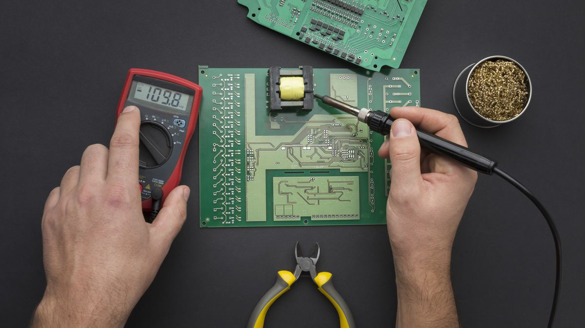

Elektronika auta · 4 min czytania
Awaria sterownika silnika – objawy, przyczyny i co dalej
Auto kręci, ale nie odpala, gaśnie bez powodu albo tester nie widzi sterownika? Objawy, jakie daje awaria sterownika silnika, łatwo pomylić z innymi usterkami. Podpowiadamy, jak je rozpoznać i co zrobić dalej.

Silnik nie chce zapalić, na desce rozdzielczej dzieje się coś dziwnego, a komputer diagnostyczny „nie widzi” jednego z modułów? Awaria sterownika silnika daje objawy, które łatwo pomylić z usterką akumulatora, pompy paliwa albo kluczyka. Dlatego zanim wydasz pieniądze na nowy sterownik, dowiedz się, co może świadczyć o jego uszkodzeniu, co sprawdzić samemu i jakie masz możliwości.
Sterownik silnika i immobilizer – jak to działa
Sterownik silnika (ECU) to komputer, który na podstawie sygnałów z czujników decyduje, ile paliwa podać, kiedy wywołać zapłon i jak ma pracować silnik. Współpracuje z innymi modułami w aucie – m.in. z immobilizerem, który sprawdza, czy w stacyjce albo w kabinie jest właściwy kluczyk.
Zależnie od modelu immobilizer bywa osobnym modułem, częścią zestawu wskaźników albo jest wbudowany w sterownik silnika. Jeśli sterownik nie dostanie potwierdzenia, że kluczyk jest „swój”, nie pozwoli uruchomić silnika albo zgasi go po chwili. Dlatego objawy awarii sterownika i kłopotów z immobilizerem często wyglądają podobnie.
Awaria sterownika silnika – objawy, które warto znać
- Rozrusznik kręci, ale silnik nie zapala – nie ma nawet próby zaskoczenia. Szerzej piszemy o tym w artykule auto kręci, ale nie odpala.
- Silnik zapala i gaśnie po 1–2 sekundach – typowy sygnał, że immobilizer nie rozpoznał kluczyka albo moduły „nie dogadały się” ze sobą.
- Miga lub świeci kontrolka kluczyka albo immobilizera – co oznacza jej zachowanie, wyjaśniamy w tekście miga kontrolka immobilizera.
- Kontrolka „check engine” i seria przypadkowych błędów – zwłaszcza gdy dotyczą czujników, które po sprawdzeniu okazują się sprawne.
- Brak komunikacji z komputerem diagnostycznym – tester nie może połączyć się ze sterownikiem.
- Tryb awaryjny, spadek mocy, nierówna praca albo gaśnięcie silnika bez wyraźnej przyczyny.
- Dziwne zachowanie wskaźników – skaczący obrotomierz, kontrolki, które same się zapalają i gasną.
Szczególnie podejrzane są objawy, które pojawiły się nagle po ulewie, myciu komory silnika, uruchamianiu „na kable”, wymianie akumulatora albo pracach spawalniczych przy aucie.
Co najczęściej uszkadza sterownik
- Wilgoć i korozja – woda dostaje się przez zapchane odpływy podszybia, nieszczelne uszczelki albo podczas mycia silnika pod ciśnieniem. Co robić po zalaniu, opisujemy w poradniku zalany sterownik.
- Przepięcia – nieprawidłowe uruchamianie z kabli, odłączanie klem przy pracującym silniku, uszkodzony regulator napięcia alternatora.
- Drgania i temperatura – z czasem mogą pękać lutowane połączenia na płytce.
- Uszkodzone przewody, złącza i masy – przetarta wiązka, luźna wtyczka, skorodowany punkt masowy.
- Nieudane zmiany w oprogramowaniu – przerwane programowanie albo przeróbki zrobione bez odpowiedniej wiedzy.
Nie zawsze winny jest sterownik
To najważniejsza rzecz w tym poradniku. Wiele „zepsutych sterowników” okazuje się sprawnych, a przyczyna leży obok – w zasilaniu, masie, bezpieczniku albo czujniku. Taka naprawa jest zwykle prostsza i tańsza.
| Objaw | Częste przyczyny poza sterownikiem |
|---|---|
| Brak komunikacji z testerem | przepalony bezpiecznik, brak zasilania lub masy, uszkodzona wiązka |
| Kręci, ale nie odpala | paliwo, czujnik położenia wału, przekaźnik, kluczyk |
| Zapala i gaśnie | kluczyk (chip, bateria), antena immobilizera przy stacyjce |
| Losowe błędy i kontrolki | słaby akumulator, skorodowane złącza, luźna masa |
Co możesz bezpiecznie sprawdzić sam
- Akumulator. Zbyt niskie napięcie potrafi wywołać zaskakująco dziwne objawy. Jeśli masz miernik: naładowany akumulator po kilku godzinach postoju pokazuje zwykle ok. 12,5–12,7 V. Wyraźnie mniej – najpierw go naładuj.
- Klemy. Czy są dokręcone i nie mają białego lub zielonego nalotu?
- Bezpieczniki opisane w instrukcji jako dotyczące silnika i zapłonu.
- Drugi kluczyk. Jeśli z nim auto odpala bez problemu, kłopot jest w pierwszym kluczyku, a nie w sterowniku.
- Okoliczności. Zapisz, kiedy problem się zaczął i co go poprzedziło. Zrób zdjęcie kontrolek i komunikatów.
Czego nie robić: nie rozłączaj wtyczek sterownika „na próbę”, nie myj komory silnika wodą pod ciśnieniem i nie kręć rozrusznikiem aż do całkowitego rozładowania akumulatora.
Uruchamiasz auto z kabli? Podłączaj je w kolejności podanej w instrukcji auta i nie odpinaj klem akumulatora przy pracującym silniku. To częste źródło przepięć, które uszkadzają elektronikę.
Naprawa, używany czy nowy sterownik – co dalej
Rozsądna kolejność to: najpierw diagnostyka, potem decyzja. Podczas diagnostyki odczytuje się błędy, sprawdza zasilanie, masy, przewody i komunikację między modułami. Dopiero wtedy wiadomo, czy uszkodzony jest sam sterownik.
- Naprawa Twojego sterownika – często najwygodniejsza, bo sterownik już współpracuje z Twoim autem i kluczykami. Przed naprawą fachowiec powinien zrobić kopię zapasową danych zapisanych w sterowniku.
- Używany sterownik z adaptacją – musi pasować numerami i zostać dopasowany do immobilizera oraz kluczyków. Zanim kupisz, przeczytaj, na co uważać przy zakupie używanego sterownika.
- Nowy sterownik – również wymaga zakodowania do Twojego auta.
Dzwoniąc po pomoc, podaj markę, model, rocznik i wersję silnika, opisz objawy i to, co je poprzedziło, oraz powiedz, gdzie stoi auto. Jeśli kupiłeś już używany sterownik, przygotuj zdjęcie jego naklejki z numerami. Dzięki temu łatwiej od razu ocenić, od czego zacząć.
Nie kupuj używanego sterownika „w ciemno” i nie zgadzaj się na „wyłączenie immobilizera” jako sposób na problem z rozruchem. Auto bez sprawnego immobilizera jest łatwiejszym łupem dla złodziei.
Masz podobne objawy? Zajmujemy się diagnostyką, naprawą i programowaniem sterowników oraz immobilizerów. Dojeżdżamy do klientów w Kielcach i okolicznych miejscowościach całą dobę, 7 dni w tygodniu. Przed pracą sprawdzamy dowód osobisty i dowód rejestracyjny, a cenę podajemy przez telefon, zanim zaczniemy. Zadzwoń: 668 292 270.